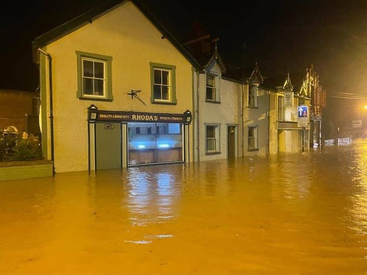

Storm Christoph
by Anthony Marchant


Where was Storm Christof?
- Storm Christoph affected all of the UK but had the worst impact in and around the midlands
- The storm travelled across the UK from West to East

When was Storm Christoph?
- Storm Christoph lasted 3 days between the 19th and 21st of January 2021
What happened?
- The storm produced a convective rainstorm which led to severe flooding
- The storm also brought strong winds and snow

What were the impacts?
Economic
- Insurance losses between 80 and 120 million
Environmental
- Riverside walkways damaged
- The river Dee burst its banks inundating properties along the valley
How did people respond to the storm?
- Thousands of people were evacuated
- Rescue were sent out to help people out of buildings
- Welsh government gave financial help to storm victims
- Active flood risk management in Greater Manchester, York and other areas significantly reduced the total number of properties flooded
Social
- 675 properties were flooded across England and Wales
- Over 1500 homes lost power in Leeds
- Communities were cut off by flooded roads
- Accidents occurred on motorways
